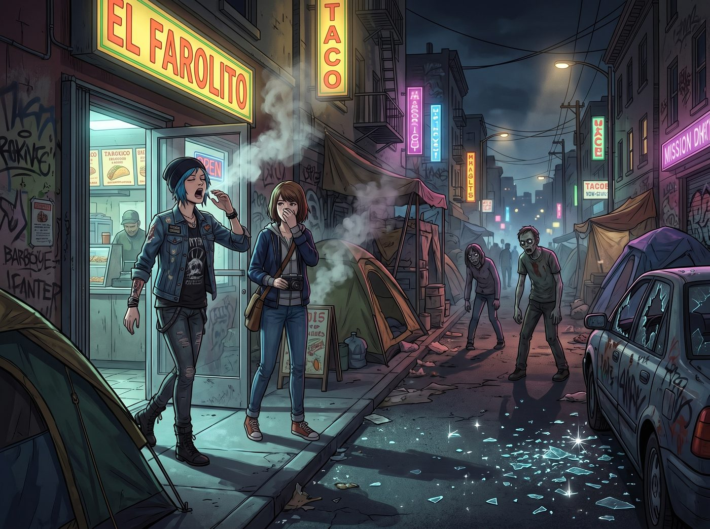

陰影裡的被遺忘者

當她們打著飽嗝、帶著一身烤肉味走出塔可店時，舊金山米慎區的夜幕已經降臨。
如果說白天的舊金山是屬於自動駕駛車和矽谷菁英的科技烏托邦，那麼二零一七到二零二零年間入夜後的舊金山街頭，就是一幅極度撕裂的賽博龐克末日景象。
街道兩旁開始出現密密麻麻的帳篷，空氣中瀰漫著大麻、陳年尿騷味以及某種化學合成毒品的甜膩氣息。路燈下，幾個眼神渙散的癮君子正以極度扭曲的姿勢站立著。而不遠處的馬路邊，滿地都是像鑽石一樣閃閃發光的碎玻璃——那是這座城市被戲稱為市花的車窗碎屑，昭示著剛剛又有一輛遊客的租賃車被砸。
一、街頭的直覺
Max 本能地縮了縮肩膀，將胸前的寶麗來相機往外套裡藏了藏。
「放輕鬆，Maxine。」Chloe 叼著一根牙籤，單手提著那個裝著短管步槍的黑色吉他盒，眼神像雷達一樣掃視著昏暗的街道，「這味道，這滿地的碎玻璃，還有這些躲在陰暗處盯著別人錢包的眼神……這簡直跟西雅圖的老城區或者波特蘭的舊城區一模一樣。整個西海岸的城市廢墟簡直就是同一個連鎖加盟店。」
就在這時，一個穿著破爛連帽衫、瘦骨嶙峋且眼神狂躁的男人，搖搖晃晃地擋在了她們面前。
他手裡藏著一把生鏽的螺絲起子，目光貪婪地盯著 Max 外套邊緣露出的相機背帶。
「把相機留下，小妞。還有錢包。」男人發出含糊不清的嘶吼，往前逼近了一步。
Max 心裡一緊。但她根本不需要動用任何超能力，因為她身邊站著一個在阿卡迪亞灣的地下世界和波特蘭街頭混大的絕對霸王。
二、感同身受的威懾
Chloe 連眉毛都沒皺一下。她沒有尖叫，沒有退後，甚至沒有把嘴裡的牙籤吐掉。
她只是停下腳步，將手裡那個沉甸甸的黑色吉他盒重重地砸在水泥地上。
「砰！」
沉悶的金屬撞擊聲讓男人愣了一下。接著，Chloe 微微彎下腰，皮靴精準地踩在吉他盒的邊緣，大拇指彈開了盒子上方的一個金屬卡扣。
吉他盒露出了一條縫隙。藉著昏暗的路燈，那雙渾濁的眼睛隱約看到了盒子裡面那一抹冰冷的、屬於軍用啞光黑金屬的槍管反光。
Chloe 抬起頭，那雙湛藍的眼睛裡沒有恐懼，只有一種複雜到連她自己都不易察覺的情緒。
「聽著，老兄。」Chloe 的聲音壓得很低，帶著一種令人毛骨悚然的平靜，「我知道你現在腦子裡在想什麼，因為十年前，我可能就是站在你這個位置的人。所以別跟我耍那套嚇唬觀光客的把戲，我看得懂你眼睛裡的算計，也知道你手裡那把螺絲起子頂多嚇得倒沒見過世面的遊客。」
男人的動作僵住了，藏在袖子裡的手指微微顫抖。
Chloe 微微彎下腰，皮靴踩在吉他盒邊緣，語氣裡混雜著一絲連她自己都不易察覺的複雜情緒：「我們剛剛才從這座城市最大的金融財團總部出來，我的實習生剛剛用兩封郵件，合法敲詐了他們幾百萬美金。這座城市把你我這種人都當成陰影裡的垃圾，但我今天恰好證明了，陰影裡的垃圾，也能把西裝革履的吸血鬼吃得連骨頭都不剩。你要不要也想想，與其搶一台舊相機換一頓飯錢，不如想想怎麼從這個系統手裡，撈回真正屬於你的那一份？」
三、退散的陰影
男人的視線在 Chloe 冰冷的眼神和那個微開的吉他盒之間來回切換，眼神裡的貪婪逐漸被一種說不清的動搖取代。
「……打擾了。」男人含糊地嘟囔了一句，迅速把螺絲起子藏回袖子裡，轉身竄進了旁邊的暗巷裡。
Chloe 冷笑了一聲，腳尖一挑，將吉他盒重新扣好、提在手裡，然後轉頭看向 Max。
Max 鬆開了緊握著相機的手，長長地吐出一口氣。她看著 Chloe 那副囂張卻帶著一絲說不清情緒的側臉，沒有像平常那樣立刻打趣，而是輕輕碰了碰她的手臂。
「妳剛才那句話，是說給他聽的，還是說給以前的自己聽的？」Max 輕聲問。
Chloe 愣了一下，隨即咧嘴笑了笑，把那份情緒藏回了慣常的痞氣底下：「管他的，反正有用就行。走吧，我們得趕緊回機場。我現在無比想念我們車廂外面的懸崖和海風，至少我們那裡的變異海鷗，絕對不敢搶妳的寶麗來。」